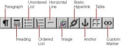

PATH
Documentation > WebObjects 4.5 >
Tools and Techniques
Structure Elements
The structures section of the toolbar looks like this:

The following sections describe the elements you can create with these buttons.
© 1999 Apple Computer, Inc. – (Last Updated July 27 99)